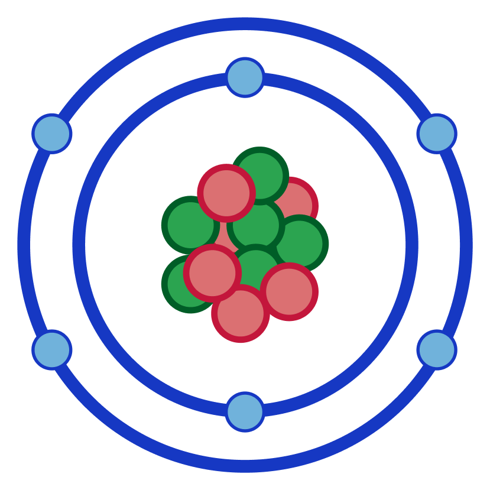
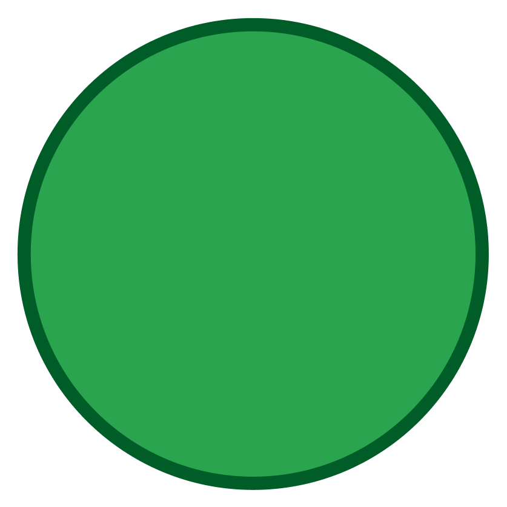
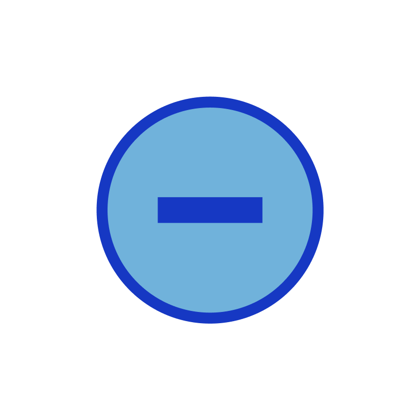

The current model of the atom consists of a relatively large, dense nucleus, surrounded by electrons. The nucleus contains protons and neutrons, and makes up the mass of the atom. Electrons are small, and orbit the nucleus in shells of differing levels of energy.
The first shell of electrons contains two energy electrons. The second shell contains eight electrons, the third, and the fourth as well.
The atomic number of an atom describes the number of protons in an atom, and the atomic mass is how many protons and neutrons are in an atom. These numbers are often displayed in the top and bottom left corners of the symbol of an element, but swap places often. A good way to remember which is which is that the atomic mass is always larger than the atomic number.
To find the amount of protons in an atom, you must subtract the atomic number from the atomic mass. The remaining amount will be your number of protons. It will also be your number of electrons if you are to draw the atom.
Protons are relatively large particles with a positive charge. They are found in the nucleus, and make up half of the atom's total mass.

Neutrons are relatively large particles with a neutral charge, meaning they have zero charge. They are found in the nucleus, and make up half of the atom's total mass.

Electrons are relatively small particles with a negative charge. They are found around the nucleus on shells. They are so small that their mass barely contributes to the atom's total mass.